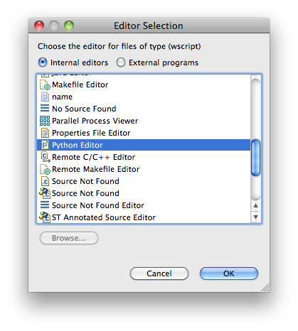

Setting up Eclipse to debug your Waf files¶
Associating wscript files with PyDev¶
PyDev will recognise files with the .py extension as Python files, but it has no way of knowing that files called “wscript” are also Python scripts. When you double-click on them, they will open in a standard editor window and you will not have syntax highlighting, the ability to set breakpoints, or any of the extra functionality of PyDev to work with these.
In order to change this, go to:
Preferences -> General -> Editors -> File Associations -> Add...
{kind=link}
Type wscript and OK.

Make sure that wscript is highlighted in the upper panel and select Add ... from the file associations panel:

From Internal Editors, select Python editor and click OK.
{kind=link}
Done!
Debugging Waf from Eclipse¶
PyDev will only let you start the debugger from files having a .py extension – but the waf script typically does not have one. You can either make a copy of it and call it waf.py or just rename it. You can then start the debugger from waf.py and set breakpoints in the wscript files as you like.